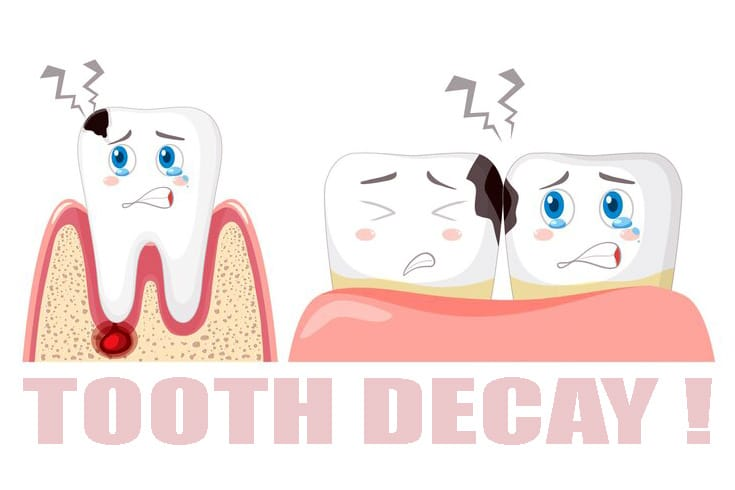

پوسیدگی دندان چگونه شروع میشود؟

پوسیدگی دندان یکی از شایعترین مشکلات دهان و دندان است که در اثر فعالیت باکتریها، تجمع پلاک و مصرف زیاد مواد قندی ایجاد میشود. اگر پوسیدگی در مراحل اولیه درمان نشود، میتواند به بخشهای عمیقتر دندان و عصب برسد.
پوسیدگی دندان چگونه ایجاد میشود؟
پس از مصرف مواد غذایی، مخصوصاً مواد شیرین، باکتریهای موجود در دهان اسید تولید میکنند. این اسید به مرور مینای دندان را ضعیف کرده و باعث ایجاد حفره و پوسیدگی میشود.
مراحل پوسیدگی دندان
- مرحله اول: ایجاد لکههای سفید روی مینای دندان به دلیل از بین رفتن مواد معدنی.
- مرحله دوم: ایجاد حفره کوچک در سطح دندان.
- مرحله سوم: گسترش پوسیدگی به لایههای داخلی دندان.
- مرحله چهارم: رسیدن پوسیدگی به عصب و ایجاد درد شدید.
علائم پوسیدگی دندان
- حساسیت به سرما و گرما
- درد هنگام جویدن غذا
- ایجاد لکههای تیره روی دندان
- بوی بد دهان
- درد مداوم در مراحل پیشرفته
دلایل اصلی پوسیدگی دندان
- مصرف زیاد مواد قندی
- مسواک نزدن صحیح
- عدم استفاده از نخ دندان
- خشکی دهان
- مراجعه نکردن منظم به دندانپزشک
چگونه از پوسیدگی دندان جلوگیری کنیم؟
- مسواک زدن حداقل دو بار در روز
- استفاده روزانه از نخ دندان
- کاهش مصرف نوشیدنیها و خوراکیهای شیرین
- معاینه منظم دندانها
- استفاده از فلوراید در صورت توصیه دندانپزشک
چه زمانی باید برای پوسیدگی دندان مراجعه کرد؟
بهتر است قبل از ایجاد درد شدید برای معاینه مراجعه شود. پوسیدگیهای اولیه معمولاً درمان سادهتری دارند، اما پوسیدگیهای عمیق ممکن است نیاز به عصبکشی یا درمانهای پیچیدهتر داشته باشند.
سوالات متداول
پوسیدگی دندان چگونه شروع میشود؟
پوسیدگی معمولاً با فعالیت باکتریها و تولید اسید روی سطح دندان شروع میشود و به تدریج مینای دندان را تخریب میکند.
آیا پوسیدگی دندان بدون درد هم ممکن است؟
بله، پوسیدگی در مراحل اولیه ممکن است بدون درد باشد و فقط در معاینه دندانپزشکی مشخص شود.
آیا پوسیدگی دندان قابل پیشگیری است؟
بله، با رعایت بهداشت دهان، تغذیه مناسب و مراجعه منظم به دندانپزشک میتوان احتمال پوسیدگی را کاهش داد.